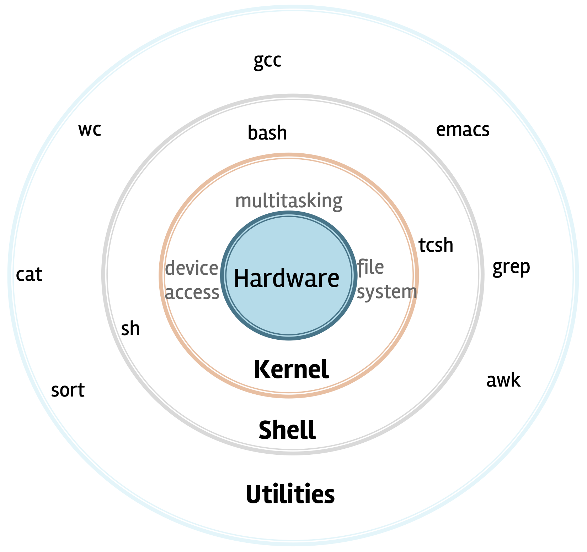
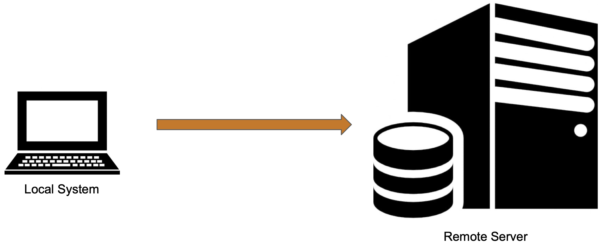
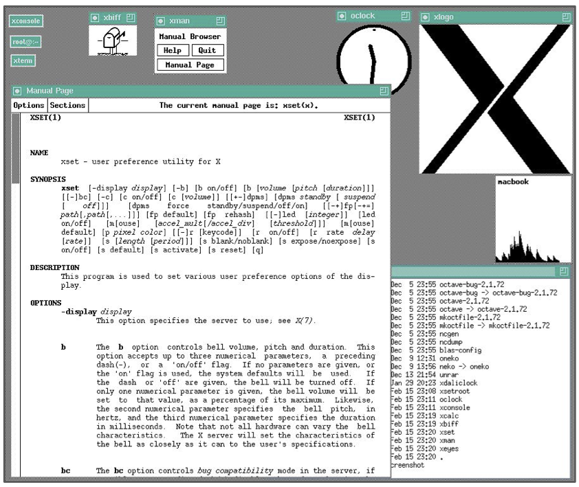
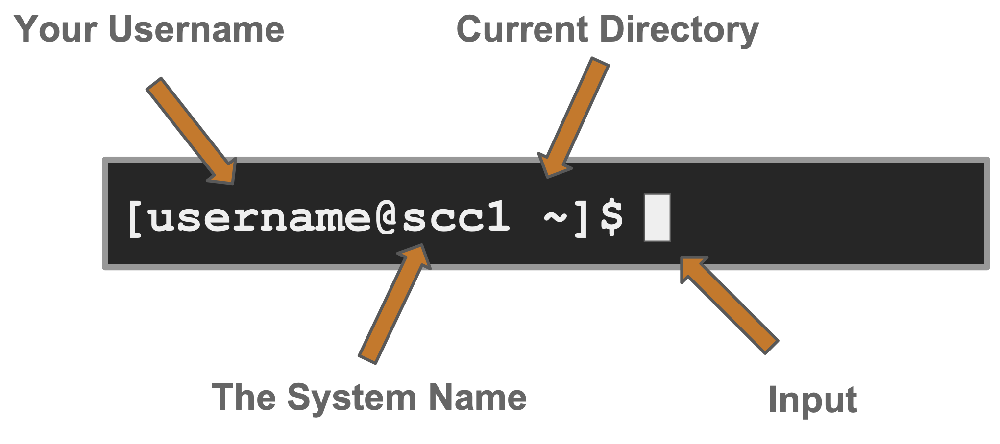
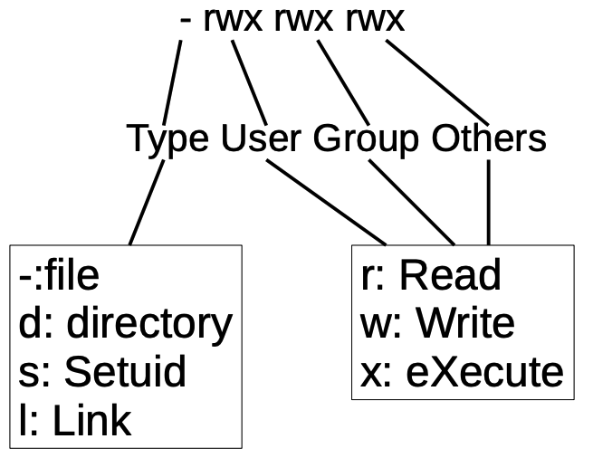

For more information: https://docs.cloudlab.us/hardware.html
Be a good Citizen!
Do not leave your CloudLab experiment instantiated unless you are using it!
Stick to your own resources and do not access another member's resources.
Secure Shell
Communication Protocol (like http, https, ftp, etc)
Do just about anything on the remote computer
Traffic is encrypted
Used mostly in the terminal/command line
SSH is the client
SSHD is the server (Open SSH Daemon)
The server must have sshd installed and running or you will not be able to connect using SSH
$ ssh alice@amd198.utah.cloudlab.us
Password
Public/Private key pair (recommended)
$ ssh-keygen

Linux is an O/S core originally written by Linus Torvalds. Now almost 10,000 developers including major technology companies like Intel and IBM.
A set of programs written by Richard Stallman and others. They are the GNU utilities.


You need software that emulates an “X” terminal and that connects using the “SSH” Secure Shell protocol.

Command: Command/program that does one thing
Options: Change the way a command does that one thing
Argument: Provides the input/output that the command interacts with.
After you connect, type
whoami # my login hostname # name of this computer echo “Hello, world” # print characters to screen echo $HOME # print environment variable echo my login is $(whoami) # replace $(xx) with program output date # print current time/date cal # print this month’s calendar shazam # bad command
Commands have three parts; command, options and arguments/parameters.
Example: cal –j 3 1999
[username@scc1 ~]$ cal -j 3 1999
cal
-j
3
1999
What is the nature of the prompt?
What was the system’s response to the command?
The Unix Programming Environment, Kernighan and Pike
... at its heart is the idea that the power of a system comes more from the relationships among programs than from the programs themselves. Many UNIX programs do quite trivial things in isolation, but, combined with other programs, become general and useful tools.
wc
awk
cat
cut
diff
grep
head
less
sed
sort
split
tail
tr
uniq
Variables are named storage locations.
USER=augustin
foo="this is foo’s value"
Environment variables are variables used and shared by the shell
$PATH
Environment variables are shared with programs that the shell runs.
To create a new variable, use the assignment operator =
=
[username@scc1 ~]$ foo="this is foo’s value"
The foo variable can be printed with echo
echo
[username@scc1 ~]$ echo $foo this is foo’s value
To make $foo visible to programs run by the shell (i.e., make it an “environment variable”), use export:
$foo
export
[username@scc1 ~]$ export foo
To see all currently defined environment variable, use printenv:
[username@scc1 ~]$ printenv HOSTNAME=scc1 TERM=xterm-256color SHELL=/bin/bash HISTSIZE=1000 TMPDIR=/scratch SSH_CLIENT=168.122.9.131 37606 22 SSH_TTY=/dev/pts/191 USER=cjahnke MAIL=/var/spool/mail/cjahnke PATH=/usr3/bustaff/cjahnke/apps/bin:/usr/local/bin:/bin:/usr/bin:/usr/local/sbin:/usr/sbin:/sbin PWD=/usr3/bustaff/cjahnke/linux-materials LANG=C MODULEPATH=/share/module/bioinformatics:/share/module/chemistry SGE_ROOT=/usr/local/ogs-ge2011.11.p1/sge_root HOME=/usr3/bustaff/cjahnke
history
!!
!
!132
!ls
ls
date –-help
man date
info date
help
man bash
The man command outputs to a pager called less, which supports many ways of scrolling through text:
man
Space, f # page forward b # page backward < # go to first line of file > # go to last line of file / # search forward (n to repeat) ? # search backward (N to repeat) h # display help q # quit help
Many Linux commands print to “standard output”, which defaults to the terminal screen. The | (pipe) character can be used to divert or “redirect” output to another program or filter.
|
w # show who's logged on w | less # pipe into the 'less' pager w | grep 'tuta' # pipe into grep, print lines containing 'tuta' w | grep -v 'tuta' # print only lines not containing ‘tuta’ w | grep 'tuta' | sed s/tuta/scholar/g # replace all 'tuta' with 'scholar'
Try the following (use up arrow to avoid retyping each line):
w | wc # count lines w | cut –d ' ' –f1 | sort # sort users w | cut –d ' ' –f1 | sort | uniq # eliminate duplicates
We can also redirect output into a file:
w | cut –d ' ' –f1 | sort | uniq > users
Note that 'awk' can be used instead of 'cut':
w | awk '{print $1;}' | sort | uniq > users
Quiz:
Essential navigation commands:
pwd # print current directory ls # list files cd # change directory
We use pathnames to refer to files and directories in the Linux file system.
/
Special characters interpreted by the shell for filename expansion:
~ # your home directory (e.g., /usr1/tutorial/tuta1) . # current directory .. # parent directory * # wildcard matching any filename ? # wildcard matching any character TAB # try to complete (partially typed) filename
Examples:
cd /usr/local # Change directory to /usr/local/lib cd ~ # Change to home directory (could just type 'cd') pwd # Print working (current) directory cd .. # Change directory to the “parent” directory cd / # Change directory to the “root” ls –d pro* # Listing of only the directories starting with 'pro'
Useful options for the “ls” command:
ls -a # List all files, including hidden files beginning with a '.' ls -ld * # List details about a directory and not its contents ls -F # Put an indicator character at the end of each name ls –l # Simple long listing ls –lR # Recursive long listing ls –lh # Give human readable file sizes ls –lS # Sort files by file size ls –lt # Sort files by modification time (very useful!)
cp [file1] [file2] # copy file mkdir [name] # make directory rmdir [name] # remove (empty) directory mv [file] [destination] # move/rename file rm [file] # remove (-r for recursive) file [file] # identify file type less [file] # page through file head -n N [file] # display first N lines tail -n N [file] # display last N lines ln –s [file] [new] # create symbolic link cat [file] [file2...] # display file(s) tac [file] [file2...] # display file in reverse order touch [file] # update modification time od [file] # display file contents, esp. binary
cd # The same ascd ~ mkdir test cd test echo 'Hello everyone' > myfile.txt echo 'Goodbye all' >> myfile.txt less myfile.txt mkdir subdir1/subdir2 # Fails. Why? mkdir -p subdir1/subdir2 # Succeeds mv myfile.txt subdir1/subdir2 cd .. rmdir test # Fails. Why? rm –rf test # Succeeds
Sometimes it is helpful to be able to access a file from multiple locations within the hierarchy. On a Windows system, we might create a "shortcut". On a Linux system, we can create a symbolic link:
mkdir foo # make foo directory touch foo/bar # create empty file ln –s foo/bar . # create link in current dir
The find command has a rather unfriendly syntax, but can be exceedingly helpful for locating files in heavily nested directories.
find
find ~ -name bu –type d # search for 'bu' directories in ~ find . –name my-file.txt # search for my-file.txt in . find ~ -name '*.txt' # search for '*.txt' in ~
needle
As we interact with Linux, we create numbered instances of running programs called processes. You can use the ps command to see a listing of your processes (and others!). To see a long listing, for example, of all processes on the system try:
ps
[username@scc1 ~]$ ps -ef
To see all the processes owned by you and other members of the class, try:
[username@scc1 ~]$ ps -ef | grep tuta
Every file has a set of permissions, an owner user, and an owning group
Permission format

View permissions:
ls -l
Change permissions with chmod:
chmod {ugo}{+-}{rwx} file
Example:
chmod o+rx myfile
Change owner with chown:
chown <user>:<group> <file>
Use top to see active processes.
top
Tasks: 408 total, 1 running, 407 sleeping, 0 stopped, 0 zombie Cpu(s): 0.3%us, 0.1%sy, 0.0%ni, 99.6%id, 0.0%wa, 0.0%hi, 0.0%si, 0.0%st Mem: 99022756k total, 69709936k used, 29312820k free, 525544k buffers Swap: 8388604k total, 0k used, 8388604k free, 65896792k cached PID USER PR NI VIRT RES SHR S %CPU %MEM TIME+ COMMAND 7019 root 20 0 329m 137m 4852 S 4.0 0.1 217:01.56 sge_qmaster 38246 isw 20 0 88724 2764 1656 S 0.7 0.0 0:01.28 sshd 41113 cjahnke 20 0 13672 1512 948 R 0.7 0.0 0:00.03 top 2324 root 20 0 0 0 0 S 0.3 0.0 0:21.82 kondemand/2 7107 nobody 20 0 89572 10m 2400 S 0.3 0.0 2:18.05 gmond 27409 theavey 20 0 26652 1380 880 S 0.3 0.0 0:34.84 tmux 1 root 20 0 25680 1604 1280 S 0.0 0.0 0:05.74 init 2 root 20 0 0 0 0 S 0.0 0.0 0:00.07 kthreadd 3 root RT 0 0 0 0 S 0.0 0.0 0:00.89 migration/0 4 root 20 0 0 0 0 S 0.0 0.0 0:01.72 ksoftirqd/0 5 root RT 0 0 0 0 S 0.0 0.0 0:00.00 stopper/0
Thus far, we have run commands at the prompt and waited for them to complete. We call this running in the foreground.
Use the & operator, to run programs in the background,
&
[username@scc1 ~]$ mycommand & [1] 54356 # ← process id [username@scc1 ~]$
Let’s look at the countdown script, in your scripts folder for practice
countdown
[username@scc1 ~]$ cd ~/scripts [username@scc1 ~]$ cat countdown
Make the script executable with chmod:
chmod
[username@scc1 ~]$ chmod +x countdown
First, run it for a few seconds, then kill with Control-C.
[username@scc1 ~]$ ./countdown 100 100 99 98 ^C # ← Ctrl-C = (^C)
Now, let’s try running it in the background with &:
[username@scc1 ~]$ ./countdown 60 & [1] 54355 [username@scc1 ~]$ 60 59
The program’s output is distracting, so redirect it to a file:
[username@scc1 ~]$ countdown 60 > c.txt & [1] 54356 [username@scc1 ~]$
Type ps to see your countdown process.
Also, try running jobs to see any jobs running in the background from this bash shell.
jobs
To kill the job, use the kill command, either with the five-digit process id:
kill
kill 54356
Or, you can use the job number (use jobs to see list) with %:
%
kill %1
bg
Sometimes you start a program, then decide to run it in the background.
[username@scc1 scripts]$ ./countdown 200 > c.out ^Z # ← Ctrl-Z = (^Z) [1]+ Stopped ./countdown 200 > c.out [username@scc1 scripts]$ bg [1]+ ./countdown 200 > c.out & [username@scc1 scripts]$ jobs [1]+ Running ./countdown 200 > c.out & [username@scc1 scripts]$
Many Linux tools, such as grep and sed, use strings that describe sequences of characters. These strings are called regular expressions.
Here are some examples:
^foo # line begins with “foo” bar$ # line ends with “bar” [0-9]\{3\} # 3-digit number .*a.*e.*i.*o.*u.* # words with vowels in order*
nano
emacs
vim
:q
:q!
:w
:wq
:x
i
a
x
y[count]y
d[count]d
p
Bash script is an executable file contains Bash shell commands which could be used to automate and simplify things.
Shell script is a text file starts with (#!) followed by the path to the shell interpreter (i.e. /bin/bash)
#!
/bin/bash
#!/bin/bash echo "Hello, World!"
$ ./hello.sh bash: ./hello.sh: Permission denied $ ls -l -rw-r--r-- 1 alice alice 47 Nov 8 15:53 hello.sh $ chmod u+x hello.sh $ ls -l -rwxr--r-- 1 alice alice 47 Nov 8 15:53 hello.sh $ ./hello.sh Hello, World!
#!/bin/bash for i in 1 2 3 4 5 6 7 8 9 10; do echo Count: ${i} done
seq
for i in `seq 1 10`; do echo Count: ${i} done
seq 1 10
*
Perform some operation on every file in the directory:
for file in *.pdf; do pdftohtml ${file} done
pdftohtml
#!/bin/bash a=1 b=2 if [[ $a -gt $b ]] then echo $a is greater than $b elif [[ $a -lt $b ]] then echo $a is less than $b elif [[ $a -eq $b ]] then echo $a is equal to $b else echo "unknown condition" fi
Git is the software that allows us to do version control
Github is an online platform where developers host their source code (and can share it the world)
To be kind to yourself
To be kind to your collaborators
To ensure your work is reproducible
It imposes a certain discipline to your programming.
You can be braver when you code: if your new feature breaks, you can revert back to a version that worked!